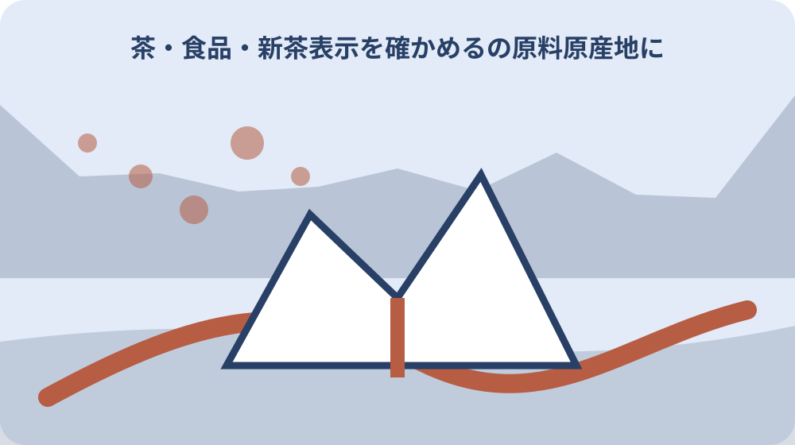

先に結論を確認する
この記事の答え：商品名や紹介文だけでは決めず、包装の原料原産地表示と事業者への確認で判断します。
森町で最初に照合する条件：新茶という時期表現と、原料原産地欄に記された産地を別々に読む。
新茶という時期と産地を分けて読む
確認の起点は森町公式は2026年4月23日に遠州森の茶初取引が行われたと伝えています。新茶表示を確かめる｜産地・製造者・販売者の見方では、別の資料から推測せず、該当する欄と確認日を一緒に残します。
この情報が必要になるのは初取引日はその年の地域の新茶時期を示しますが、個別商品の原料産地を保証する欄ではありません。新茶表示を確かめる｜産地・製造者・販売者の見方を家族や担当者と共有するときは、数字や固有名詞だけを抜き出さず、その数字が示す条件まで伝えます。
実際の手順は商品名、購入日、賞味期限、原料原産地を別々に撮影します。新茶表示を確かめる｜産地・製造者・販売者の見方の記録には、確認した資料名、対象住所または商品、次に連絡する相手を一行で追記すると引継ぎが途切れません。
ここで止めて確かめたいのは新茶と書いてあることだけで森町産茶葉と断定せず、一括表示へ進みます。公式資料に書かれていない個別判断は未確認のまま区別し、町または表示責任者から回答を得た日付を後で足します。
商品名より一括表示を先に確認する
確認の起点は包装表面の地域名や風景は商品の特徴を伝えますが、法定表示とは役割が異なります。新茶表示を確かめる｜産地・製造者・販売者の見方では、別の資料から推測せず、該当する欄と確認日を一緒に残します。
この情報が必要になるのは裏面や側面の名称、原材料名、原料原産地、内容量、期限、保存方法、責任表示を探します。新茶表示を確かめる｜産地・製造者・販売者の見方を家族や担当者と共有するときは、数字や固有名詞だけを抜き出さず、その数字が示す条件まで伝えます。
実際の手順は表と裏を同じ商品番号で撮り、贈答箱だけでなく内袋も確認します。新茶表示を確かめる｜産地・製造者・販売者の見方の記録には、確認した資料名、対象住所または商品、次に連絡する相手を一行で追記すると引継ぎが途切れません。
ここで止めて確かめたいのは箱の販売名を内袋の原料原産地へ読み替えず、最小販売単位の表示を読みます。公式資料に書かれていない個別判断は未確認のまま区別し、町または表示責任者から回答を得た日付を後で足します。
荒茶の茶葉産地が基準になる
確認の起点は消費者庁の緑茶資料は、原料原産地を荒茶の原料となった茶葉の産地としています。新茶表示を確かめる｜産地・製造者・販売者の見方では、別の資料から推測せず、該当する欄と確認日を一緒に残します。
この情報が必要になるのは仕上げ加工をした場所と茶葉が育った場所は別の情報です。新茶表示を確かめる｜産地・製造者・販売者の見方を家族や担当者と共有するときは、数字や固有名詞だけを抜き出さず、その数字が示す条件まで伝えます。
実際の手順は原材料欄の茶、原料原産地欄の国産などを一組で転記します。新茶表示を確かめる｜産地・製造者・販売者の見方の記録には、確認した資料名、対象住所または商品、次に連絡する相手を一行で追記すると引継ぎが途切れません。
ここで止めて確かめたいのは仕上げ工場が森町にあることだけで茶葉も森町産と判断しません。公式資料に書かれていない個別判断は未確認のまま区別し、町または表示責任者から回答を得た日付を後で足します。
国産と森町産の粒度を区別する
確認の起点は消費者庁の例では国内産荒茶を国内で仕上げた緑茶を国産と表示します。新茶表示を確かめる｜産地・製造者・販売者の見方では、別の資料から推測せず、該当する欄と確認日を一緒に残します。
この情報が必要になるのは国産は日本国内という範囲で、森町という市町単位まで示す表現ではありません。新茶表示を確かめる｜産地・製造者・販売者の見方を家族や担当者と共有するときは、数字や固有名詞だけを抜き出さず、その数字が示す条件まで伝えます。
実際の手順は森町産を確かめたい場合は包装上の追加表示と販売者への確認を記録します。新茶表示を確かめる｜産地・製造者・販売者の見方の記録には、確認した資料名、対象住所または商品、次に連絡する相手を一行で追記すると引継ぎが途切れません。
ここで止めて確かめたいのは国産表示から特定農園や特定地区まで推定しないようにします。公式資料に書かれていない個別判断は未確認のまま区別し、町または表示責任者から回答を得た日付を後で足します。
国内製造を茶葉産地と取り違えない
確認の起点は加工食品の対象原材料が加工品の場合、製造地を国内製造などと示す仕組みがあります。新茶表示を確かめる｜産地・製造者・販売者の見方では、別の資料から推測せず、該当する欄と確認日を一緒に残します。
この情報が必要になるのは製造地の文字は原材料が育った場所を直接表すとは限りません。新茶表示を確かめる｜産地・製造者・販売者の見方を家族や担当者と共有するときは、数字や固有名詞だけを抜き出さず、その数字が示す条件まで伝えます。
実際の手順は国内製造の直前にある原材料名と、別欄の原料原産地を文脈ごと読みます。新茶表示を確かめる｜産地・製造者・販売者の見方の記録には、確認した資料名、対象住所または商品、次に連絡する相手を一行で追記すると引継ぎが途切れません。
ここで止めて確かめたいのは大きな国産風の意匠より、表示欄の語句を優先して判断します。公式資料に書かれていない個別判断は未確認のまま区別し、町または表示責任者から回答を得た日付を後で足します。
複数産地は重量順で読む
確認の起点は複数産地は原則として使用重量の多い順に表示されます。新茶表示を確かめる｜産地・製造者・販売者の見方では、別の資料から推測せず、該当する欄と確認日を一緒に残します。
この情報が必要になるのは消費者庁資料には外国産60％、国産40％をその順で示す緑茶例があります。新茶表示を確かめる｜産地・製造者・販売者の見方を家族や担当者と共有するときは、数字や固有名詞だけを抜き出さず、その数字が示す条件まで伝えます。
実際の手順は先頭産地と二番目以降をすべて転記し、その他表記があればそのまま残します。新茶表示を確かめる｜産地・製造者・販売者の見方の記録には、確認した資料名、対象住所または商品、次に連絡する相手を一行で追記すると引継ぎが途切れません。
ここで止めて確かめたいのは並び順を品質順位や価格順位と誤解せず、重量割合の順として読みます。公式資料に書かれていない個別判断は未確認のまま区別し、町または表示責任者から回答を得た日付を後で足します。
輸入品と国内仕上げを分ける
確認の起点は外国産荒茶を国内で仕上げる例と、外国で製品まで仕上げ日本で小分けする例は表示が異なります。新茶表示を確かめる｜産地・製造者・販売者の見方では、別の資料から推測せず、該当する欄と確認日を一緒に残します。
この情報が必要になるのは後者は輸入品として原産国名を表示するため、包装した場所だけでは区分できません。新茶表示を確かめる｜産地・製造者・販売者の見方を家族や担当者と共有するときは、数字や固有名詞だけを抜き出さず、その数字が示す条件まで伝えます。
実際の手順は原産国名、原料原産地、製造所固有記号など実際にある欄を撮影します。新茶表示を確かめる｜産地・製造者・販売者の見方の記録には、確認した資料名、対象住所または商品、次に連絡する相手を一行で追記すると引継ぎが途切れません。
ここで止めて確かめたいのは日本語包装であることや国内販売者の住所だけで国内製造品とは決めません。公式資料に書かれていない個別判断は未確認のまま区別し、町または表示責任者から回答を得た日付を後で足します。
製造者と販売者を役割別に控える
確認の起点は製造者は製造を担う者、販売者は販売責任を表示する者として別に記載される場合があります。新茶表示を確かめる｜産地・製造者・販売者の見方では、別の資料から推測せず、該当する欄と確認日を一緒に残します。
この情報が必要になるのは森町内の問屋の歴史が長いことと、個別商品の表示責任者が誰かは別問題です。新茶表示を確かめる｜産地・製造者・販売者の見方を家族や担当者と共有するときは、数字や固有名詞だけを抜き出さず、その数字が示す条件まで伝えます。
実際の手順は名称、所在地、問い合わせ先、製造所記号を表示どおりに一行ずつ控えます。新茶表示を確かめる｜産地・製造者・販売者の見方の記録には、確認した資料名、対象住所または商品、次に連絡する相手を一行で追記すると引継ぎが途切れません。
ここで止めて確かめたいのは販売者住所を茶葉の畑所在地へ置き換えないことが重要です。公式資料に書かれていない個別判断は未確認のまま区別し、町または表示責任者から回答を得た日付を後で足します。
森町の茶業史は背景情報として読む
確認の起点は町史は17世紀中頃の三倉での商品作物化や1824年の文政茶一件を伝えます。新茶表示を確かめる｜産地・製造者・販売者の見方では、別の資料から推測せず、該当する欄と確認日を一緒に残します。
この情報が必要になるのは別資料は八十八夜ごろの摘採、手揉み、粗茶、町の問屋という流れを記します。新茶表示を確かめる｜産地・製造者・販売者の見方を家族や担当者と共有するときは、数字や固有名詞だけを抜き出さず、その数字が示す条件まで伝えます。
実際の手順はこの地域史は商品を理解する背景として引用し、現行商品の産地証明とは分けます。新茶表示を確かめる｜産地・製造者・販売者の見方の記録には、確認した資料名、対象住所または商品、次に連絡する相手を一行で追記すると引継ぎが途切れません。
ここで止めて確かめたいのは歴史的に茶が盛んな地域という事実から、店頭全商品を同一産地としません。公式資料に書かれていない個別判断は未確認のまま区別し、町または表示責任者から回答を得た日付を後で足します。

購入時点の包装を一周撮影する
確認の起点は食品表示は商品改訂や原料事情で変わるため、同じ商品名でも購入時点の表示が重要です。新茶表示を確かめる｜産地・製造者・販売者の見方では、別の資料から推測せず、該当する欄と確認日を一緒に残します。
この情報が必要になるのは正面、裏面、側面、底面、シール、内袋を連続撮影すれば問い合わせ時に確認できます。新茶表示を確かめる｜産地・製造者・販売者の見方を家族や担当者と共有するときは、数字や固有名詞だけを抜き出さず、その数字が示す条件まで伝えます。
実際の手順は購入店、購入日、ロット、賞味期限を写真ファイル名またはメモへ結びます。新茶表示を確かめる｜産地・製造者・販売者の見方の記録には、確認した資料名、対象住所または商品、次に連絡する相手を一行で追記すると引継ぎが途切れません。
ここで止めて確かめたいのはウェブの商品説明だけを手元のロット表示より優先せず、差があれば販売者へ尋ねます。公式資料に書かれていない個別判断は未確認のまま区別し、町または表示責任者から回答を得た日付を後で足します。
贈答相手には確認できた範囲だけ伝える
確認の起点は新茶は贈り物に使われますが、産地説明を短くするほど誤解が生じやすくなります。新茶表示を確かめる｜産地・製造者・販売者の見方では、別の資料から推測せず、該当する欄と確認日を一緒に残します。
この情報が必要になるのは森町で購入、国産茶葉、森町産表示ありはそれぞれ異なる情報です。新茶表示を確かめる｜産地・製造者・販売者の見方を家族や担当者と共有するときは、数字や固有名詞だけを抜き出さず、その数字が示す条件まで伝えます。
実際の手順はカードには包装で確認できた表現をそのまま使い、未確認の農園名を足しません。新茶表示を確かめる｜産地・製造者・販売者の見方の記録には、確認した資料名、対象住所または商品、次に連絡する相手を一行で追記すると引継ぎが途切れません。
ここで止めて確かめたいのは味や香りの感想は個人の評価として、原料原産地の事実と分けて伝えます。公式資料に書かれていない個別判断は未確認のまま区別し、町または表示責任者から回答を得た日付を後で足します。
大石の視点：土地の物語と表示の根拠を両立する
確認の起点は初取引日、茶業史、食品表示の読み方は各公式資料で確認できる事実です。新茶表示を確かめる｜産地・製造者・販売者の見方では、別の資料から推測せず、該当する欄と確認日を一緒に残します。
この情報が必要になるのは私は森町の物語を大切にするほど、個別商品の産地は包装で丁寧に確かめるべきだと考えます。新茶表示を確かめる｜産地・製造者・販売者の見方を家族や担当者と共有するときは、数字や固有名詞だけを抜き出さず、その数字が示す条件まで伝えます。
実際の手順は茶畑の所在地や生産者まで知りたい場合は、販売者へロットを示して回答可能な範囲を尋ねます。新茶表示を確かめる｜産地・製造者・販売者の見方の記録には、確認した資料名、対象住所または商品、次に連絡する相手を一行で追記すると引継ぎが途切れません。
ここで止めて確かめたいのはこれは私見であり、表示違反の判断は消費者庁等の所管窓口へ具体的な包装を示して確認します。公式資料に書かれていない個別判断は未確認のまま区別し、町または表示責任者から回答を得た日付を後で足します。